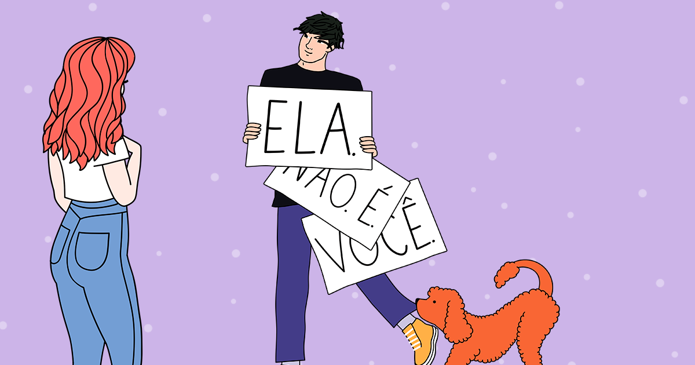

Não É Como nos Filmes, da autora Lynn Painter, conta a história de Liz Buxbaum, uma garota romântica que cresceu acreditando nos clichês dos filmes de amor. Ela idealiza o amor perfeito, com grandes gestos e finais felizes, exatamente como nos filmes que assistia com a mãe. Quando Michael, seu crush de infância, volta a morar na mesma cidade, Liz vê ali a chance de viver seu próprio romance cinematográfico. Porém, as coisas não saem como ela planejou, especialmente quando Wes Bennett seu vizinho irritante e nada romântico começa a se envolver na sua vida mais do que ela gostaria.
Ao longo da história, Liz passa por uma jornada de autoconhecimento. À medida que ela se aproxima de Wes, começa a perceber que talvez o amor verdadeiro não se pareça com os roteiros perfeitos que ela tanto admirava. O relacionamento entre Liz e Wes se desenvolve de maneira leve, divertida e natural, mostrando que às vezes o amor está onde menos esperamos e que ele pode ser mais real e bonito justamente por não ser idealizado. A autora trabalha com muita sensibilidade temas como luto, amizade e amadurecimento, sem perder o tom descontraído.
A escrita de Lynn Painter é envolvente e cheia de humor. Ela consegue equilibrar momentos emocionantes com cenas engraçadas e diálogos afiados. As referências a filmes românticos tornam a leitura ainda mais gostosa para quem ama comédias românticas, e o romance entre os personagens principais é daqueles que fazem o leitor torcer de verdade. É uma história que faz rir, suspirar e até refletir sobre o que realmente importa nos relacionamentos.
Mais do que uma comédia romântica adolescente, Não É Como nos Filmes mostra que a vida real pode ser tão interessante quanto qualquer filme — mesmo sem trilha sonora perfeita ou reviravoltas mirabolantes. Liz aprende que não existe um “roteiro certo” para o amor, e que os melhores momentos são justamente aqueles que fogem do planejado. O livro nos ensina que o romance de verdade acontece nos detalhes simples, nas imperfeições e na conexão sincera entre duas pessoas.
